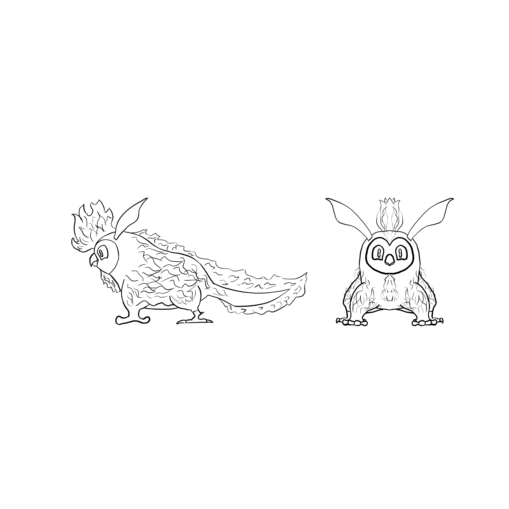

Owlbear
This design was inspired by a sugar glider I saw at a zoo. I had been thinking about making a creature design already and I thought the fuzziness and big bulgy eyes of the sugar gliders I had seen were super cute and I wanted to make a design that would capture that feeling.
With my dream game being a Pokemon inspired creature capturing game with Pokken Tournament style combat, I wanted to make a design that had a bit of lore behind it. I settled on making it a creature that could control time, given my gripe with how games never explain how saving and checkpoints somehow reset the world. The idea of controlling time ended up driving a lot of the design elements.

